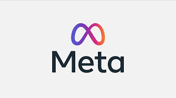
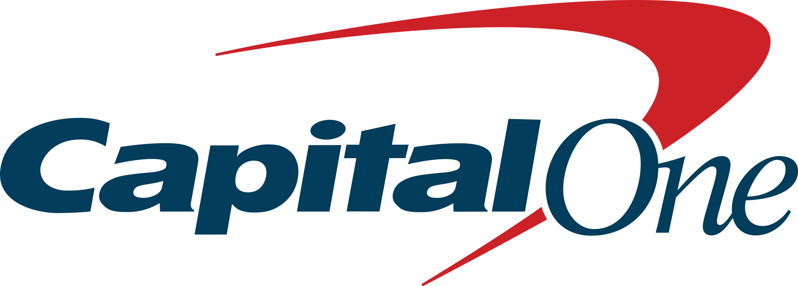

Colocated with the 2026 Annual Conference of the Association for Computational Linguistics (ACL 2026)
San Diego, California, United States
With the rapid advances in AI, empowered by large language models (LLMs) and natural language processing (NLP) techniques, there is an increasing integration of AI systems that directly interact with users and facilitate our daily tasks. In particular, the recent development of agentic models allows users to communicate directly with AI for complex tasks such as coding, web surfing, information seeking, and deep research. These models integrate NLP techniques with computer vision, systems engineering, and other social and physical sciences, expanding the boundaries of what AI systems can accomplish and making NLP systems omnipresent in various aspects of our everyday life. This makes the development of reliable, responsible, ethical, and safe AI increasingly important.
This year, we are excited to host our TrustNLP workshop at ACL 2026, inviting participants and papers that focus on developing models that are explainable, fair, privacy‑preserving, causal, and robust. In particular, we have secured sponsorship from major companies in the field, including Meta, Capital One, and Amazon. We will use the funding to promote diversity, participation, and mentoring, furthering our mission.
Invited Talk 1
Michael Johnston — Applied Science Manager, Responsible AI, Amazon AGI
July 4, 2026, 9:05 AM — Room: Harbor G
As AI systems become increasingly capable, it is critical that techniques ensuring their safety and alignment to human values keep up with the exponential pace of innovation. At the same time, there is increasing concern from an evaluation science perspective that static benchmarks fail to capture the true capabilities of models with respect to both utility and safety. Also, while high quality diverse data is critical for training, it is rare and expensive to create, especially for new tasks and multi-turn conversations. In this talk, I will illustrate how these three issues can be addressed through an 'Adversarial Arena' approach to driving research and data creation, where different approaches are evaluated through interactive competition. I will draw on examples and learnings from the Amazon Nova AI Challenge: Trusted AI, an international AI competition now in its second year. In the challenge, competing teams build either secure coding agents or automated red teaming bots and their creations face off in a series of tournaments setting in motion a continuous flywheel of innovation and data generation.
Michael Johnston is Applied Science Manager in the Responsible AI team in Amazon AGI. Michael has over 30 years of experience in artificial intelligence and machine learning and research contributions spanning NLP, dialog, multimodality, fusion of human and artificial intelligence, and trustworthy AI. Before joining Amazon, he was VP of Research and Innovation at Interactions Corporation, and earlier held positions at AT&T Labs Research, Oregon Graduate Institute, Brandeis University, and Apple. Michael has over 60 U.S. patents, and has published over 80 scientific papers. He has designed and overseen multiple international challenge competitions in artificial intelligence, including the Alexa Prize, the Amazon Trusted AI Challenge, and Amazon Nova AI Challenge: Trusted Software Agents.
Invited Talk 2
Lilly Weng — UC San Diego
July 4, 2026, 11:00 AM — Room: Harbor G
The open exchange of ideas, the freedom of thought and expression, and respectful scientific debate are central to the aims and goals of a ACL conference. These require a community and an environment that recognizes the inherent worth of every person and group, that fosters dignity, understanding, and mutual respect, and that embraces diversity. For these reasons, ACL is dedicated to providing a harassment-free experience for participants at our events and in our programs. Harassment and hostile behavior are unwelcome at any ACL conference. This includes: speech or behavior (including in public presentations and on-line discourse) that intimidates, creates discomfort, or interferes with a person's participation or opportunity for participation in the conference. We aim for ACL conferences to be an environment where harassment in any form does not happen, including but not limited to: harassment based on race, gender, religion, age, color, national origin, ancestry, disability, sexual orientation, or gender identity. Harassment includes degrading verbal comments, deliberate intimidation, stalking, harassing photography or recording, inappropriate physical contact, and unwelcome sexual attention. It is the responsibility of the community as a whole to promote an inclusive and positive environment for our scholarly activities. In addition, any participant who experiences harassment or hostile behavior may contact any current member of the ACL Board or contact Priscilla Rasmussen, who is usually available at the registration desk of the conference. Please be assured that if you approach us, your concerns will be kept in strict confidence, and we will consult with you on any actions taken. The ACL board members are listed at: https://www.aclweb.org/portal/about. The full policy and its implementation is defined at: https://www.aclweb.org/adminwiki/index.php?title=AntiHarassment_Policy
The open exchange of ideas, the freedom of thought and expression, and respectful scientific debate are central to the aims and goals of a ACL conference. These require a community and an environment that recognizes the inherent worth of every person and group, that fosters dignity, understanding, and mutual respect, and that embraces diversity. For these reasons, ACL is dedicated to providing a harassment-free experience for participants at our events and in our programs. Harassment and hostile behavior are unwelcome at any ACL conference. This includes: speech or behavior (including in public presentations and on-line discourse) that intimidates, creates discomfort, or interferes with a person's participation or opportunity for participation in the conference. We aim for ACL conferences to be an environment where harassment in any form does not happen, including but not limited to: harassment based on race, gender, religion, age, color, national origin, ancestry, disability, sexual orientation, or gender identity. Harassment includes degrading verbal comments, deliberate intimidation, stalking, harassing photography or recording, inappropriate physical contact, and unwelcome sexual attention. It is the responsibility of the community as a whole to promote an inclusive and positive environment for our scholarly activities. In addition, any participant who experiences harassment or hostile behavior may contact any current member of the ACL Board or contact Priscilla Rasmussen, who is usually available at the registration desk of the conference. Please be assured that if you approach us, your concerns will be kept in strict confidence, and we will consult with you on any actions taken. The ACL board members are listed at: https://www.aclweb.org/portal/about. The full policy and its implementation is defined at: https://www.aclweb.org/adminwiki/index.php?title=AntiHarassment_Policy
We invite papers that focus on different aspects of safe and trustworthy language modeling. Topics of interest include (but are not limited to):
We welcome contributions that also draw upon interdisciplinary knowledge to advance Trustworthy NLP. This may include working with, synthesizing, or incorporating knowledge across expertise, sociopolitical systems, cultures, or norms.
All submissions undergo double‑blind peer review (with author names and affiliations removed) by the program committee, and they will be assessed based on their relevance to the workshop themes.
All standard submissions go through the OpenReview platform. To submit, use this submission link.
Submitted manuscripts must be 8 pages long for full papers and 4 pages long for short papers. Please follow ACL submission policies. Both full and short papers can have unlimited pages for references and appendices. Please note that at least one of the authors of each accepted paper must register for the workshop and present the paper.
Template files can be found here.
We also ask authors to include a limitation section and broader impact statement, following guidelines from the main conference.
If your paper has been reviewed by ACL, EMNLP, EACL, or ARR and the average rating is higher than 2.75 (either average soundness or excitement score), the paper is qualified to be submitted on the fast track. In the appendix, please include the reviews and a short statement discussing what parts of the paper have been revised.
Fast-Track submissions go through the OpenReview platform. To submit, use this submission link.
ACL workshops are traditionally archival. To allow dual submission of work, we are also including a non‑archival track. If accepted, these submissions will still participate and present their work in the workshop. A reference to the paper will be hosted on the workshop website (if desired), but will not be included in the official proceedings. Please submit through OpenReview but indicate that this is a cross‑submission at the bottom of the submission form. You can also skip this step and inform us of your non‑archival preference after the reviews. Papers accepted to the Findings of ACL 2026 may also submit non‑archival to the workshop.
Accepted and under‑review papers are allowed to be submitted to the workshop but will not be included in the proceedings.
No anonymity period will be required for papers submitted to the workshop, per the latest updates to the ACL anonymity policy. However, submissions must still remain fully anonymized.
Interested in reviewing for future editions of TrustNLP?
Please fill out this form.


Please contact us at trustnlpworkshoporganizers@gmail.com.